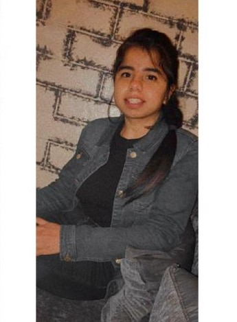

RIDHI KALRA
ADDRESS:2/48 ,Third Floor ,Subhash Nagar ,New Delhi-110027
I am an ambitious and passionate about my work.I have steady source of motivation that drives me to do better work.
I am also a quick learner and love to learn more and more skills.
Qualification
:Pursuing MCA from Maulana Azad National Institute of Technology,Bhopal
:Completed Bsc(H) Computer Science from Dyal Singh College,University of Delhi
COURSE SUBJECTS
C Programming
I started learning C and C++ in my first year of graduation.
Therefore ,the basics are well known . I have code many programs
in C++ language .From MANIT, c programming as a core subjects it
is my expectation that I will be an expert in the same language and
apart from basics, I will get to know more interesting facts about the
language and excess in coding in the same language.
Computer Organisation and Architecture
This subject seems to be really interesting as it provides us with the
knowledge of how computer actually works internally. With this subject, I
expect that I will be able to understand and imbibe more deeper concepts on
Computer architecture and its organisation.
Data Structure
Though this subject is very interesting but at the same time it is very complex
and difficult. I have learned the basic concepts in my graduation years but now
its important to implement its every topic with much more understanding. I hope that
teachers and my classmates of MANIT will help me to do so very well. Since the subject
has its great importance in interviews also I hope i will be able to crack those
interviews as well.
Web Development
This subject is my favourite because somehow it relates to designing webpages.
Before making this page honestly I haven't made any web page of this level. But with these
assignments, I am able to implement all that I know about html and css . Assignments given by
teachers of all the subjects proved to be really helpful for me. I hope this semester I can say
myself atleast a good front end developer.
Mathematics
Mathematics in MCA is new to me. I haven't done this because I have done bsc in computer science
so it was a minor subject. In MANIT ,I will focus on this subject as well .
Operating System
I know only basics of opearting system and I hope that in this semester only i will be able to make this
subject strong with the teacher of MANIT.
SKILLS
:C++, Python, Java ,coding
HOBBIES
:Sketching
:Travelling
:Reading fictions
Contact
 :kalraridhi05@gmail.com
:kalraridhi05@gmail.com
 :9870596951
:9870596951